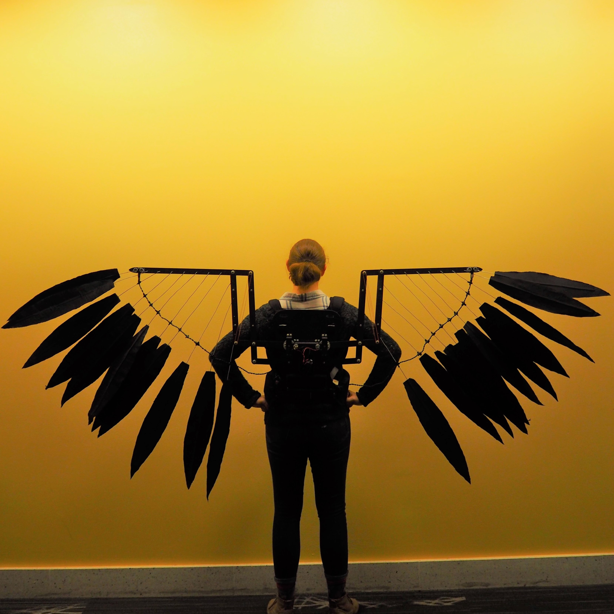
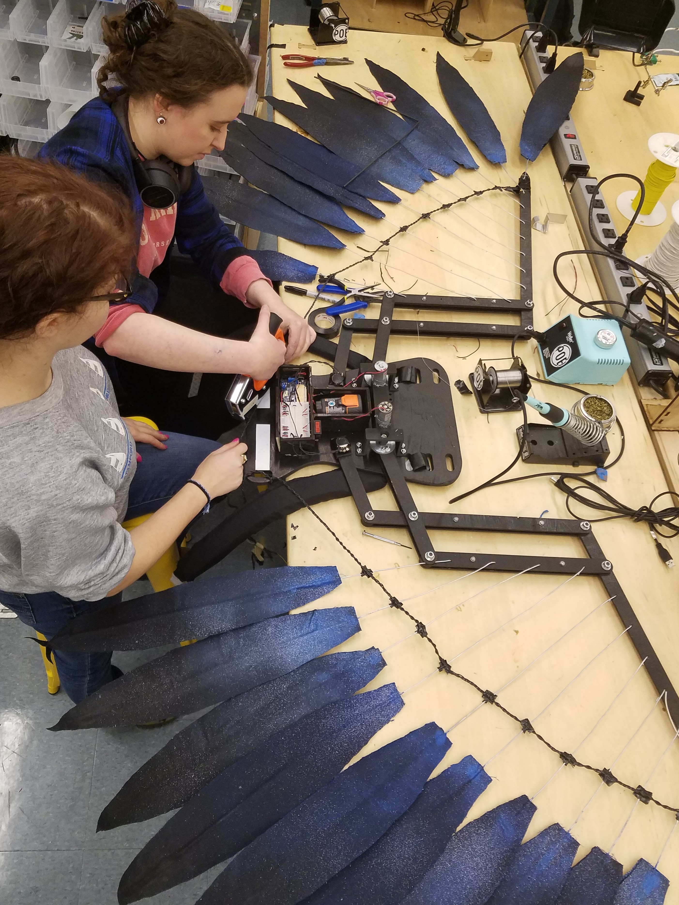
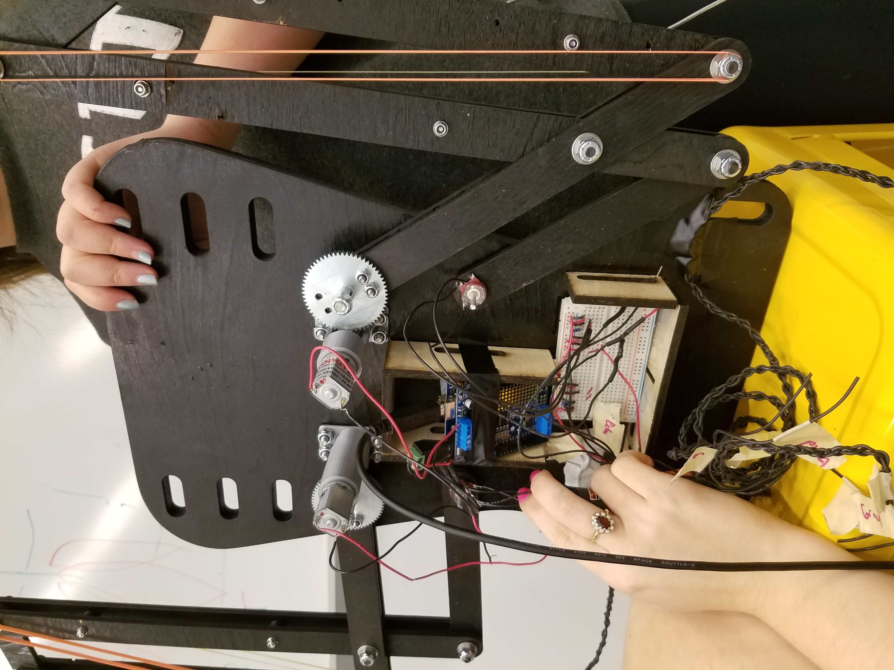
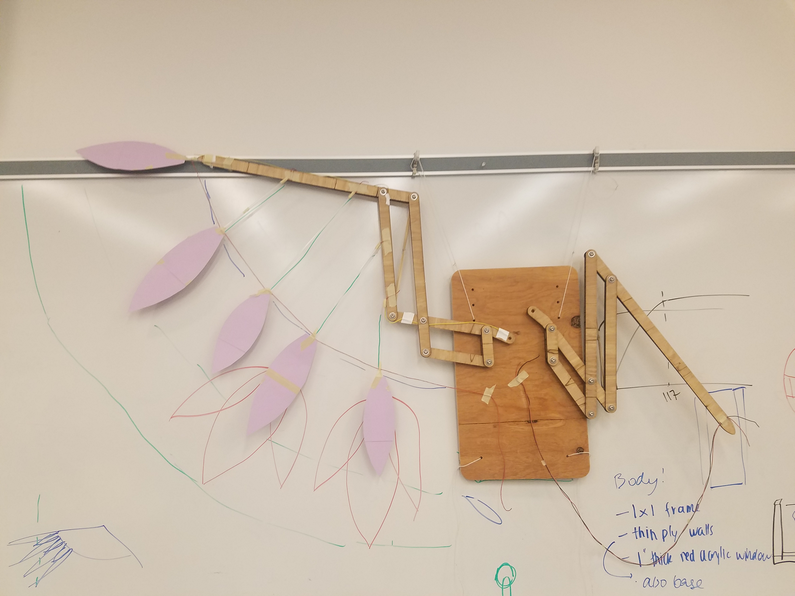
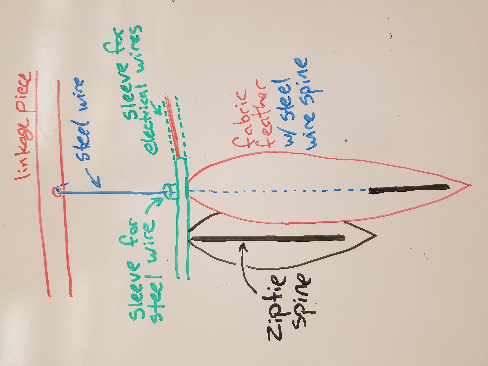

October 2017-December 2017
Principles of Engineering
For our final Principles of Engineering project we were instructed to create an integrated system with electrical, software, and mechanical components. Our team of five decided to design a pair of wearable mechanical wings that would react to environmental information and user movements.
Our final model included motor driven linkages with an extended wing-span of 8 feet. We mounted several fabric feathers to give the wings an elegant look. The harness that holds the wings to the user’s back incorporated strain-gauges (flex sensors) that detected arm movements and would tell the wings to expand or collapse to mimic the arm movements.
I designed the linkage system and driver in Solidworks in order to get the desired flapping motion as well as ensure that we could choose a motor and gearing ratio that would supply enough torque. This involved first creating a detailed Solidworks CAD model of the linkages that was originally driven by a geometry model that made quick adjustments easier. This produced a movable model that was modified to reference materials so that the entire model would have an accurate weight estimate. I used this information to calculate a conservative estimate for the required torque needed to lift the wing and found a motor that would be able to efficiently do this (using a motor data curve to ensure the motor would be running efficiently and not be strained).
    